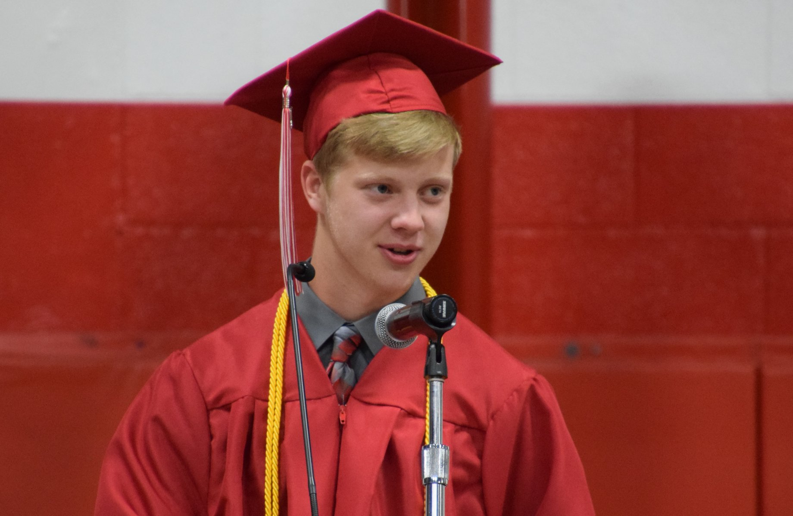

- Name: Nathan Medsker
- Year at IUPUI: Second Year, but First Year in SOIC
- Major: Informatics
- Focus: Web Design or HCI
- Home Town: Marshall, IL
- Extracurriculars/Positions: Vice President - Honors Adventure Club, Peer Leader - OTEAM, Mentor - Honors Peer Mentoring Program
- Work: Team Assistant for the S.T.A.R. Program
- Hobbies: Playing board games and video games, making board games, running, listening to music, experimental cooking
- Future Goals: Learn to do JS better than I can currently, become a web developer, understand good UX, have a game published
Other Information
This paragraph gives you a little information as to why I decided on making my project Snack Share. My first reason for creating Snack Share is that I am in college, and I need to learn more cheap recipes that will keep me decently healthy. The apps that are out there did not accomplish what I wanted. The main app that people use for recipes and sharing recipes now is Pinterest, and it is awful. I hate Pinterest with a passion and wanted to create something that could appeal to college students. There is a constant layout for the site, and it only has a single purpose: share easy and/or cheap recipes with other college students.